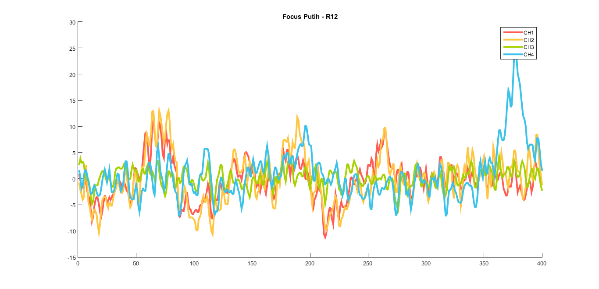
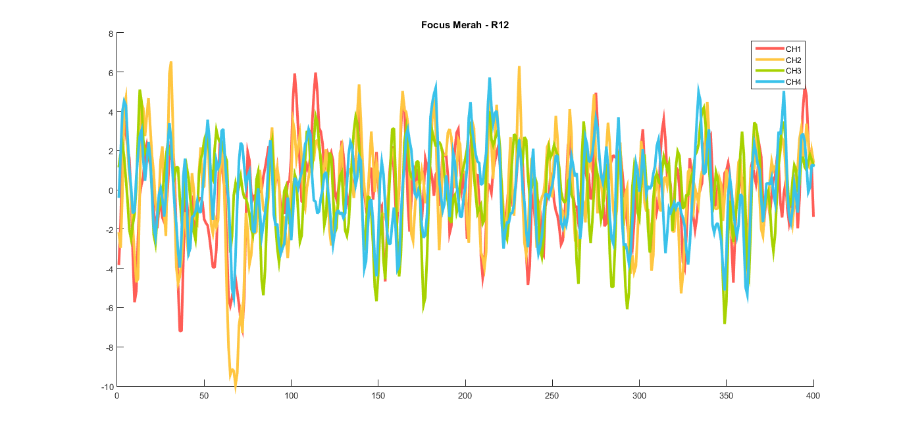
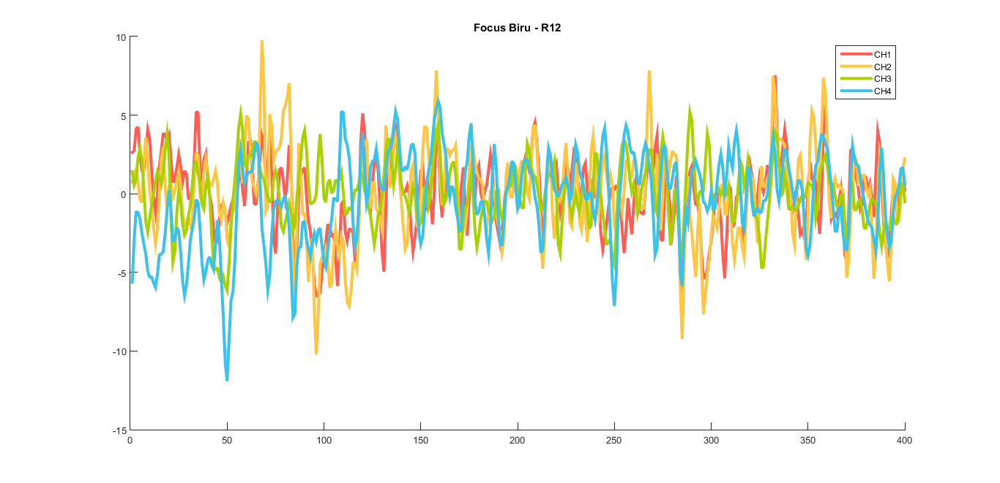

Contents
clc; clear; %Variables % N = Neutral : White % L = Left : Red % R = Right : Blue fs = 200; % sesuai ganglion pakai 200Hz % ambil data dan buang N pertama (pemanasan)
R11
load('D:\Jaler\OpenBCI_GUI\_DataSkripsi\R11.txt'); data_raw = R11;
R12
load('D:\Jaler\OpenBCI_GUI\_DataSkripsi\R12.txt'); data_raw = R12; % step 2. Notch 50Hz [b,a] = butter(2,[49 51]/(fs/2), 'stop'); % bandpass Filter [d,c] = butter(2,[0.5 50]/(fs/2), 'bandpass'); for i=1:4 data_raw(:,i)=filter(b,a,data_raw(:,i)); data_raw(:,i)=filter(d,c,data_raw(:,i)); end for i=1:4
R11
% N{i} = [{data_raw(1616:2222,i)};{data_raw(3238:4053,i)};{data_raw(5065:5673,i)};... % {data_raw(6691:7492,i)};{data_raw(8504:9106,i)}]; % L{i} = [{data_raw(607:1615,i)};{data_raw(4054:5064,i)};{data_raw(7493:8503,i)}]; % R{i} = [{data_raw(2223:3237,i)};{data_raw(5674:6690,i)};{data_raw(9107:10123,i)}];
R12
N{i} = [{data_raw(1616:2224,i)};{data_raw(3242:4045,i)};{data_raw(5059:5665,i)};...
{data_raw(6679:7482,i)};{data_raw(8498:9102,i)}];
L{i} = [{data_raw(607:1621,i)};{data_raw(4046:5058,i)};{data_raw(7483:8497,i)}];
R{i} = [{data_raw(2225:3241,i)};{data_raw(5666:6678,i)};{data_raw(9103:10113,i)}];
end for i=1:4 n{1,i} = N{1,i}{1,1}(1:400,1); n{2,i} = N{1,i}{1,1}(201:600,1); n{3,i} = N{1,i}{2,1}(1:400,1); n{4,i} = N{1,i}{2,1}(201:600,1); n{5,i} = N{1,i}{2,1}(401:800,1); n{6,i} = N{1,i}{3,1}(1:400,1); n{7,i} = N{1,i}{3,1}(201:600,1); n{8,i} = N{1,i}{4,1}(1:400,1); n{9,i} = N{1,i}{4,1}(201:600,1); n{10,i} = N{1,i}{4,1}(401:800,1); n{11,i} = N{1,i}{5,1}(1:400,1); n{12,i} = N{1,i}{5,1}(201:600,1); l{1,i} = L{1,i}{1,1}(1:400,1); l{2,i} = L{1,i}{1,1}(201:600,1); l{3,i} = L{1,i}{1,1}(401:800,1); l{4,i} = L{1,i}{1,1}(601:1000,1); l{5,i} = L{1,i}{2,1}(1:400,1); l{6,i} = L{1,i}{2,1}(201:600,1); l{7,i} = L{1,i}{2,1}(401:800,1); l{8,i} = L{1,i}{2,1}(601:1000,1); l{9,i} = L{1,i}{3,1}(1:400,1); l{10,i} = L{1,i}{3,1}(201:600,1); l{11,i} = L{1,i}{3,1}(401:800,1); l{12,i} = L{1,i}{3,1}(601:1000,1); r{1,i} = R{1,i}{1,1}(1:400,1); r{2,i} = R{1,i}{1,1}(201:600,1); r{3,i} = R{1,i}{1,1}(401:800,1); r{4,i} = R{1,i}{1,1}(601:1000,1); r{5,i} = R{1,i}{2,1}(1:400,1); r{6,i} = R{1,i}{2,1}(201:600,1); r{7,i} = R{1,i}{2,1}(401:800,1); r{8,i} = R{1,i}{2,1}(601:1000,1); r{9,i} = R{1,i}{3,1}(1:400,1); r{10,i} = R{1,i}{3,1}(201:600,1); r{11,i} = R{1,i}{3,1}(401:800,1); r{12,i} = R{1,i}{3,1}(601:1000,1); end for i=1:4 n_cat{i} = cat(2,n{:,i}); n_mean{i} = mean(n_cat{i},2); l_cat{i} = cat(2,l{:,i}); l_mean{i} = mean(l_cat{i},2); r_cat{i} = cat(2,r{:,i}); r_mean{i} = mean(r_cat{i},2); end lw = 3; figure(1); title('Focus Putih - R12'); hold on plot(n_mean{1},'color',[1, 0.364, 0.337],'linewidth',lw); plot(n_mean{2},'color',[1, 0.776, 0.254],'linewidth',lw); plot(n_mean{3},'color',[0.654, 0.823, 0],'linewidth',lw); plot(n_mean{4},'color',[0.227, 0.760, 0.917],'linewidth',lw); legend('CH1','CH2','CH3','CH4') hold off figure(2); title('Focus Merah - R12'); hold on plot(l_mean{1},'color',[1, 0.364, 0.337],'linewidth',lw); plot(l_mean{2},'color',[1, 0.776, 0.254],'linewidth',lw); plot(l_mean{3},'color',[0.654, 0.823, 0],'linewidth',lw); plot(l_mean{4},'color',[0.227, 0.760, 0.917],'linewidth',lw); hold off legend('CH1','CH2','CH3','CH4') figure(3); title('Focus Biru - R12'); hold on plot(r_mean{1},'color',[1, 0.364, 0.337],'linewidth',lw); plot(r_mean{2},'color',[1, 0.776, 0.254],'linewidth',lw); plot(r_mean{3},'color',[0.654, 0.823, 0],'linewidth',lw); plot(r_mean{4},'color',[0.227, 0.760, 0.917],'linewidth',lw); hold off legend('CH1','CH2','CH3','CH4') snapnow  